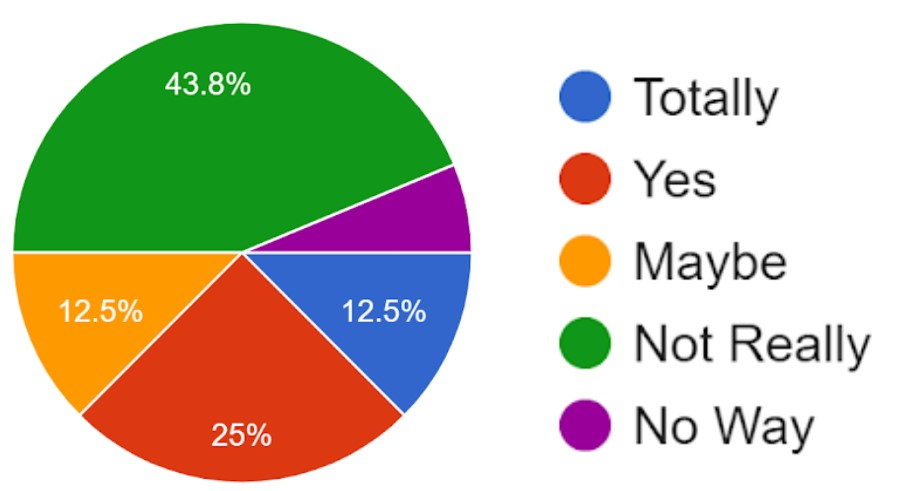
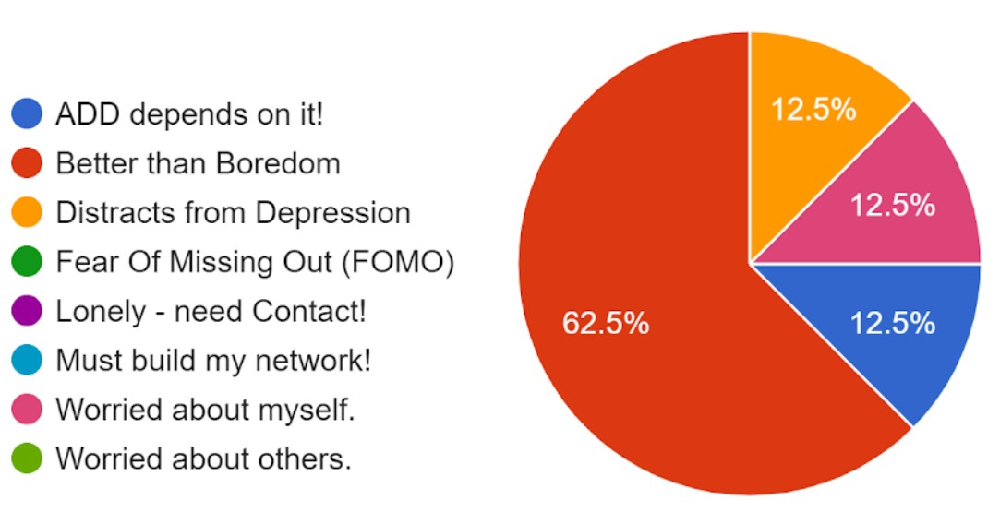

Social Media Hurts Teens
By Luis Z
How Lyceum students use social media: Besides TikTok (YouTube by and for kids all over the world),
we mostly just send messages and photos to each other.
In the Education Week article "Social Media is Tearing Us Apart" by Alyson Klein, middle and high school students answer a survey about how much they use social media and what that is doing to them. This article is from back in January 2020, so before the pandemic. I bet the pandemic has made this worse for students at Lyceum, so I made a survey as well.
Cyberbullying and Ghosting
The first thing I think of about social media hurting us is cyberbullying. Over ⅓ of the students in the article said that “people should accept that seeing offensive or threatening content is just a part of being online." It is not ok to threaten each other, but social media makes it easier to do, so some people may do it anyway.
I think many kids are toxic online in front of other kids just to get a reaction from it. I see a lot of that in comments on Youtube, from people who are not at Lyceum. I don't see that with Lyceum students with each other, though.
In my survey, I asked if students felt hurt by social media. All the students answered all my other questions, but only three students answered this question. Maybe the others do feel threatened or hurt, but don't want to admit it, at least to others.
But there are many other ways to be hurt besides cyberbullying. The same students who say getting threatened is part of being online also said that if you “don’t want to text someone anymore, it’s okay to just ghost them.” In quarantine we use social media to make and keep friends, so getting ghosted hurts a lot.You may think ghosting is ok because the person you are ghosting will assume you are just choosing to talk to other people, but you're probably wrong.
How often do we use social media?
In my survey, half of Lyceum students said they used social media a lot or all the time (4 & 5), and few said they were not online much (1 & 2). If you are not writing back, it means you don't want to, and the person who was expecting you knows it and feels it.
Addiction is the Biggest Harm
Question: Are you addicted to social media?
To be honest, I think the biggest way we are hurt by social media is by getting addicted to it.
Over 1/3rd of us know we are addicted (and if you add those who think we maybe are, that's half of us). As far as the other half goes, I think they don't know they are addicted yet.
I asked students who admitted that they were probably or definitely addicted to social media to say why, and 2/3rds of us use social media out of pure boredom.
Question: Why do you use social media?
The pandemic is the one to blame because quarantine forces us to stay in our houses. I think people who have been quarantined have gotten used to a lifestyle of staying inside.
But things are changing now. Lately me and my family have been going on trips to Connecticut and Greenfield, just to drive around and play football on open fields and get food to bring home. That helps me to like going outside more, to realize how much fun it is instead of just staying inside. I need to go get my Mongoose bike from my grandpas and start riding around!
If you have gotten addicted to social media, get a bike, or do something with your family and friends to get outside. There is going to be a free Lyceum Summer Camp where you can play sports and have fun (and also learn things). That will definitely help!
A Need for Attention
It's not just about boredom. Minoshka Dominguez said that kids need to be seen and heard by others to feel good. She said, "When kids don't get much attention at their house they use social media to get some attention." But that kind of attention does not always feel good -- like when we get threatened, ghosted, or dumped on because other people don't take as much care online with feelings as they do with people they are next to IRL.
Minoshka agrees with me about what we should do about the problem: